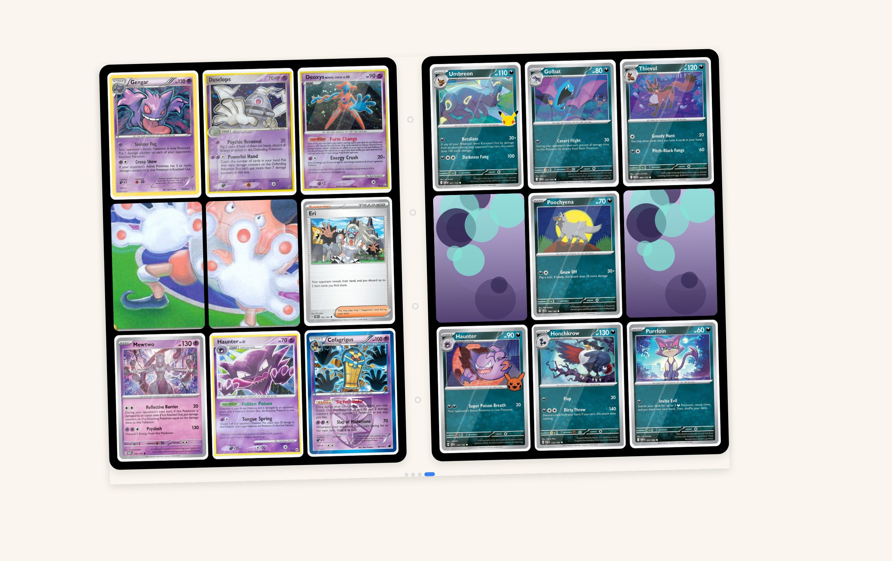
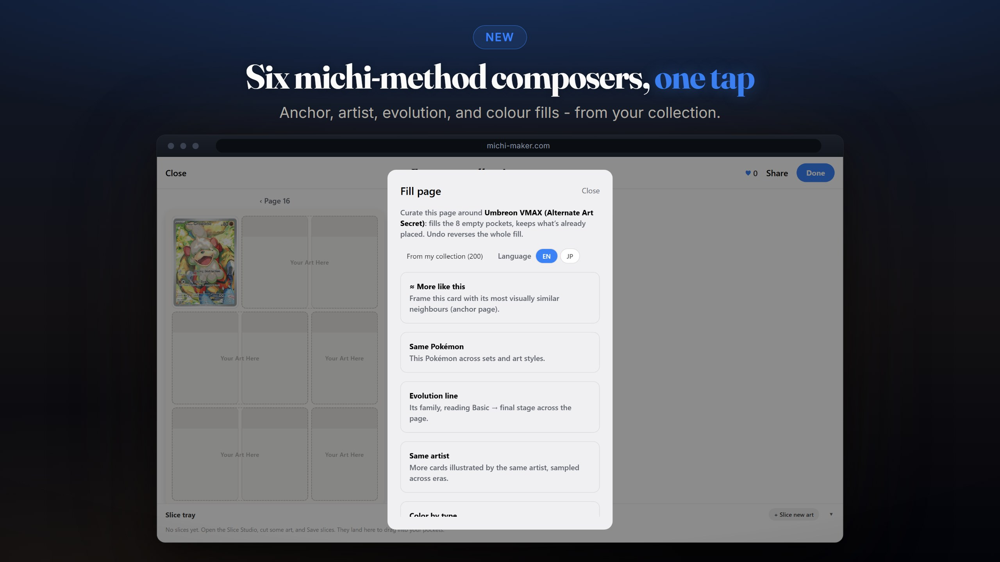
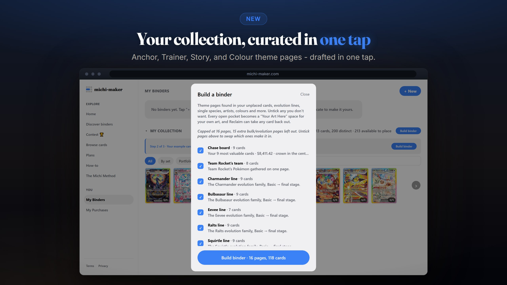
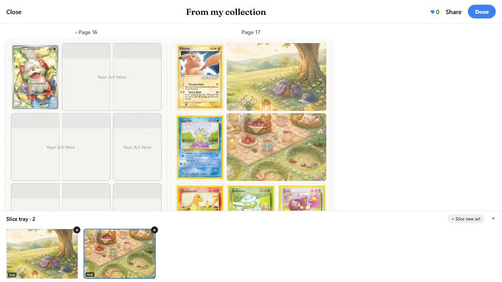
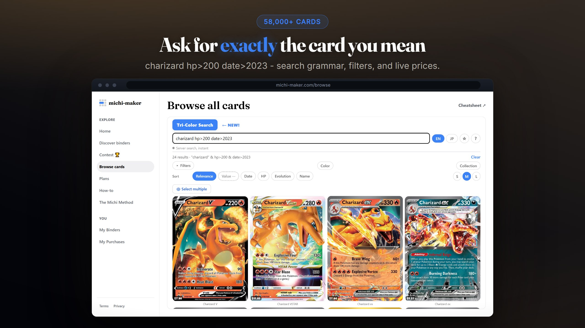
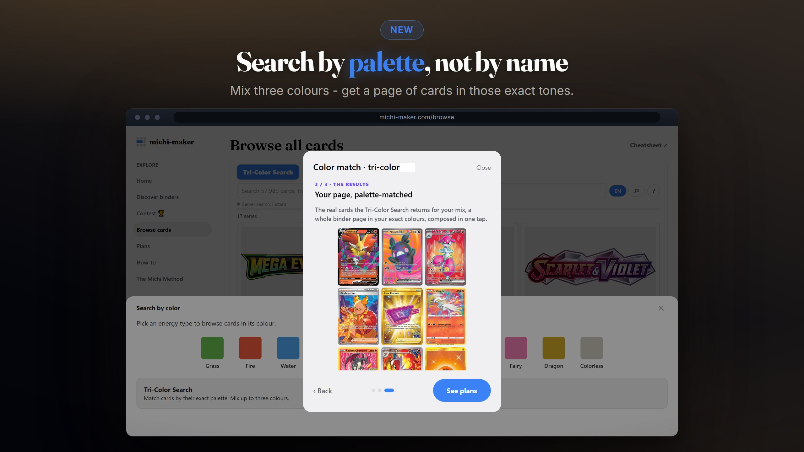
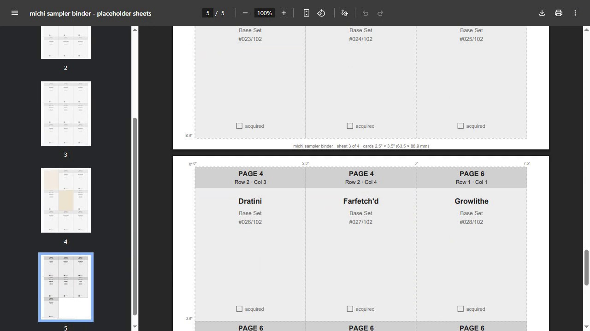
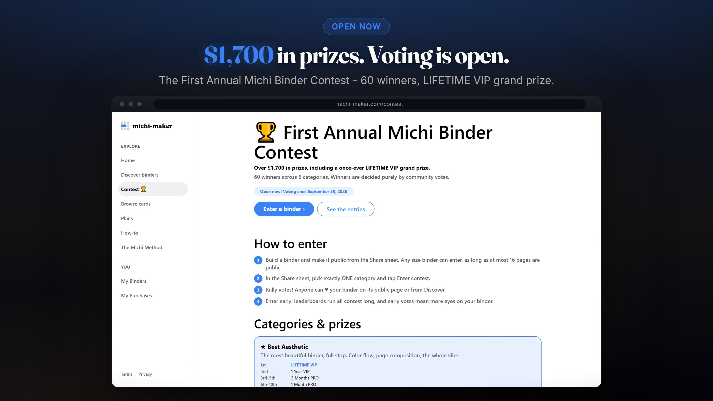

michi-maker is a studio for curated Pokémon card binders. Compose anchor pages, rarity ladders, color spreads and artist galleries, then print true-size fill sheets and build the real thing.

“My First Binder”, a live binder flipping through real pages, not a screenshot.
Most binder apps sort your cards. michi-maker composes them: anchor pages, color spreads, rarity ladders, artist galleries. Every pocket placed on purpose.
Pages come in real side-load sizes (3×3, 3×4, 4×4). Jumbo cards span four pockets, V-UNIONs assemble from their pieces, and folded art crosses the fold, exactly like the binder on your shelf.
Print cut-ready fill sheets at true card size, 2.5″ × 3.5″ edge to edge, so every cut is shared and the page you composed drops straight into real pockets.
Not wireframes, not renders. Every frame below is the real app, captured live. Hover a frame to preview its demo; click to watch it large.

Seed a page with one card and auto-curate the rest around it. Hover to watch one Umbreon become an anchor page of eight lookalikes, undo, then refill as a tri-color palette match.

Turn a pile of cards into story-first pages in one pass: chase boards, evolution lines, artist pages, type clusters - then flip through all 16 pages it composed.

Build a page by hand, then finish it with art: five starters placed one by one, a watercolour picnic sliced, merged into folded pieces, and tapped in so the art flows across pockets.

Ask for exactly the card you mean: search grammar, filters, sorting and live prices across 58,000+ cards.

Mix three colours and get a page of cards in exactly those tones. Search by palette, not by name.
Scans from the TCGScan app and CSV imports land here live. Fill binders from what you own: green for owned, gray for still hunting.
Fill sheets ship with placeholders, your real sliced art, and inserts. Gap compensation keeps mounted pictures reading continuous across pockets.
Publish binders at a permanent @username, collect likes, and make it to the featured homepage section. Anyone can flip through, no account needed.
Also in the box: double-sided book view, card labels, jumbo & V-UNION support, dark mode.
true card size, cut-ready
Export any binder as cut-ready fill sheets: placeholders for the hunt, your real sliced art, inserts, and folded two-wide pieces whose art crosses the fold. Print, cut, slide into pockets. The page on your shelf matches the page on your screen. Hover to watch the two PDFs generate.

Over $1,700 in prizes across 6 categories, 60 winners, and a once-ever LIFETIME VIP grand prize, decided purely by community votes. Voting ends September 30, 2026.

Build a binder, make it public, pick a category. Early votes mean more eyes on your pages.
Every example below is a live binder. Open one, flip its pages, then duplicate it and make it yours.
Start free and build real binders today. Sign in so your binders follow you between devices, and upgrade only when you outgrow the free plan.